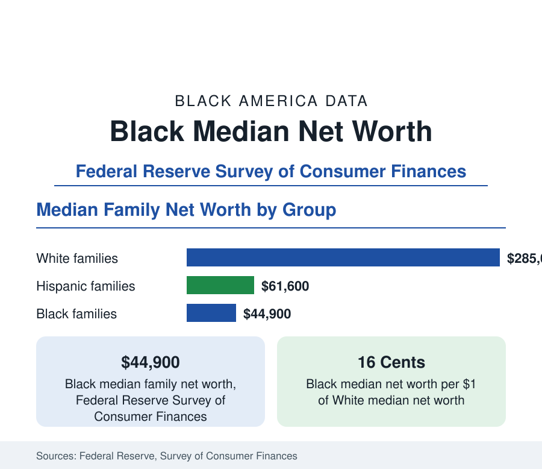

Black Business
Black Median Net Worth: The Wealth Gap in Federal Reserve Data
The Federal Reserve puts Black median family net worth at $44,900, against $285,000 for White families — about 16 cents on the dollar. The widest gap in economic data.

Wealth — what a family owns minus what it owes — is the balance-sheet measure of economic position, and it is where the gaps documented throughout this reference reach their widest. The Federal Reserve's Survey of Consumer Finances, the definitive federal study of household balance sheets conducted every three years, places median net worth for Black families at $44,900, against $61,600 for Hispanic families and $285,000 for White families. The Black median is about 16 cents for every dollar of the White median — a far wider proportional gap than in earnings (about 80 cents) or household income (about 73 cents). This article explains the measure and what composes it.
How Net Worth Is Measured
The Survey of Consumer Finances interviews thousands of families about every component of their balance sheets: homes, vehicles, bank accounts, retirement accounts, stocks, businesses, and real estate on the asset side; mortgages, auto loans, credit cards, and student debt on the liability side. Net worth is the difference. The survey deliberately oversamples wealthy families to capture the top of the distribution, which is why its figures are the standard for wealth research. The median family — the midpoint — is the figure used throughout this reference, because wealth is so concentrated at the top that averages describe the rich more than the typical.
What Black Families Own
The composition of the Black balance sheet differs systematically from the White one, and the composition explains much of the level. The primary residence is the dominant Black asset: home equity accounts for a far larger share of Black wealth than of White wealth, reflecting the homeownership patterns of the census section — and making Black net worth unusually sensitive to housing prices, as the foreclosure crisis demonstrated when it erased a disproportionate share of Black wealth in a few years. Retirement accounts and financial assets — stocks, mutual funds, business equity — form a much smaller share: Black families participate in retirement plans at lower rates, hold smaller balances when they do, and own business equity at rates reflecting the firm-scale data of this section. Transaction accounts hold smaller precautionary balances, leaving less buffer against income shocks.
What Black Families Owe
On the liability side, the distinguishing feature is student debt. Black families are more likely to hold education debt, hold larger balances, and — because of the income data in this reference — carry it longer; Black borrowers also include a large share of parents and graduate borrowers. Mortgage debt is held at lower rates, following homeownership. Credit card and installment debt service consume a larger share of income at the Black median even where balances are smaller, because rates and incomes differ. The net result is a balance sheet that is thinner on appreciating and income-producing assets, thicker in debt taken on for education and consumption, and therefore slower to compound.
Why Wealth Compounds Differently
Wealth differs from income in one decisive respect: it is inherited. The survey and the research literature document large racial differences in inheritance and family financial transfers — White families are substantially more likely to receive inheritances, and to receive larger ones, than Black families, a direct transmission of past generations' balance sheets into present down payments, tuition payments, and business startups. Add the compounding arithmetic — assets held longer and added to earlier grow faster — and the structure of the gap becomes self-reinforcing in the data: wealth buys the assets that produce wealth. This is the mechanism economists cite when describing why the wealth gap, unlike the earnings gap, has not narrowed measurably across the survey's modern history.
The Trend in the Survey
The most recent survey recorded the fastest Black wealth growth in its history: Black median net worth rose by more than half between the 2019 and 2022 surveys, the largest proportional gain of any group, driven by rising home values, pandemic-era savings and stimulus, and business equity gains. The level gap nonetheless remained wide — the White median grew by a similar proportion from a base more than six times larger, so the dollar gap widened even as the ratio improved slightly. Both readings are in the data, and this reference reports the level, the ratio, and the dollar gap together, because each answers a different question.
Summarized: $44,900 against $285,000 — 16 cents on the dollar — composed of home equity first, thin financial holdings, student debt's weight, and the inheritance channel that links today's balance sheets to yesterday's. It is the terminal statistic of the sequence this reference traces from earnings through income to ownership, and the subject of the related articles on homeownership, retirement savings, and business equity in this section and the census pages.
More in Black Business
Black-Owned Businesses: Counts, Receipts, and the Representation Gap
About 161,000 Black-owned employer firms and three million solo ventures: how the Census Bureau counts Black business ownership, where firms concentrate, and the gap between population share and business share.
Black Buying Power: The $1.8 Trillion Consumer Economy
Black buying power is estimated at about $1.8 trillion — larger than the economy of most nations. What the figure measures, who produces it, and what it buys.
Black-Owned Businesses by Industry: Where the Firms Are
Health care and social assistance is the largest industry of Black business — nearly a third of employer firms. The Annual Business Survey industry profile.
Source: Board of Governors of the Federal Reserve System, Survey of Consumer Finances; Changes in U.S. Family Finances bulletin.